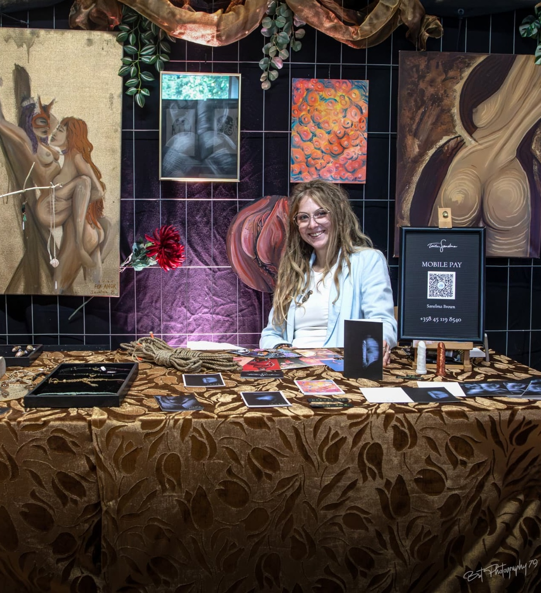

“Welcome to TaiteenSanelma, a space where creativity takes many forms. I work across painting, jewelry, textiles, and design — creating custom pieces with care and attention to detail. This site is both a portfolio of my work and an easy way to connect if you`d like something made just for you.”

EVENTS

I finished painting this big sunflower mural on the back wall of a small wooden shed outside in front of the local plant nursery Pinsiön Taimisto

Unisex Art Event - Erotic arts and handcrafts event, held at Lamminpään Osuuskuntatalo in Tampere on the 13th and 14th of September
Photo credits to Pete BstPhotography

Taika Puutaarhan Taiteilijat - Taidepaja Lapsille ja Aikuisille, Pinsiön Taimistolla ManseFest tapahtuman yhteydessä
Taphtumassa maalailtiin kukkien ja puutarhan isnpiroimana pyöreille kanvaksille Pinsiön Taimiston pienessä kasvihuoneessa